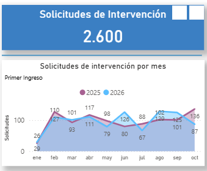

Presentación
OVD
OVD
Guardia Provincial
Gabinete Especializado
Acortamiento del tiempo procesal
Relato a evidencia
Entrevista de investigación videograbada
Circuito de intervención
Paso 1
OVD
Informe de riesgo
Paso 2
Gabinete especializado en Violencia
Paso 3
AGR
Controla
Personal
Régimen Juvenil Penal
Cuerpo de Supervisores
Centro Judicial Este


